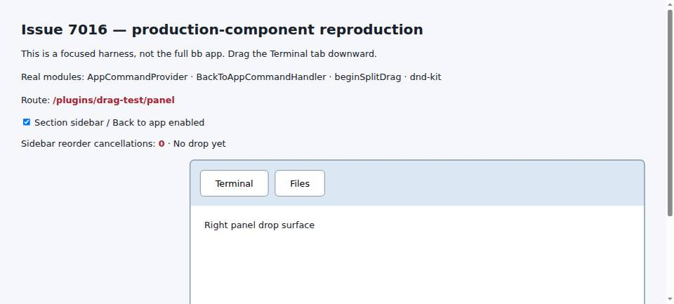
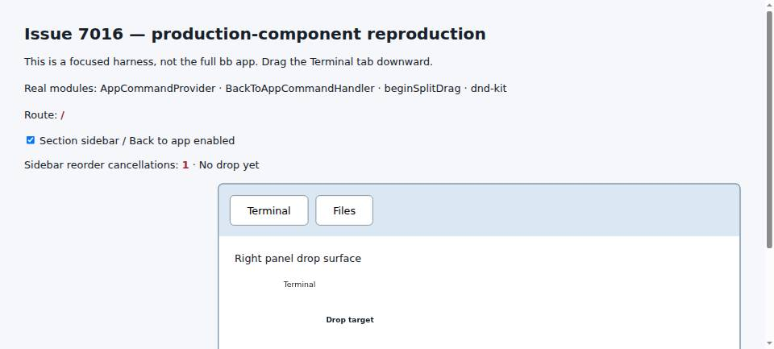
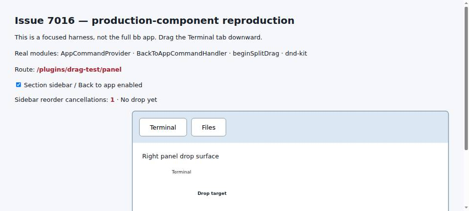

#7016 · Split-drag cancellation leaks into route navigation
Verdict: REPRODUCED · Root-cause confidence: high · Reproduction label: confirmed-repro
1. TL;DR
A split drag sends a synthetic Escape keydown to cancel the competing sidebar reorder gesture. That event also reaches the global keyboard-command dispatcher, where Escape means “Back to app” whenever a section sidebar is active. Plugin panels with a registered section sidebar therefore leave their route as soon as the drag engages; opening a section directly makes the destination Home. The sidebar contents are not involved. Consuming the synthetic event before dispatch keeps dnd-kit's cancellation listener working without turning the internal cancellation into navigation.
2. Claims vs findings
| Claim | Status | Evidence |
|---|---|---|
| Drag engagement leaves a plugin section before pointer release. | Verified | The actual AppLayout and beginSplitDrag regression changes the route to / on pointermove. A Chromium production-component harness repeats the route change with the pointer held down. |
| The section sidebar registration matters, not its contents. | Verified mechanism | The regression registers an empty sidebar component. routeSidebar returns null without the field; AppLayout installs BackToAppCommandHandler only for a section back route. The browser harness separately checks the handler-disabled control. |
| Other plugin pages and thread pages are unaffected. | Supported, not exhaustively verified | They lack this section-specific Back to app handler. The existing split-drag and thread-area suites pass after the fix. No exhaustive plugin matrix was run. |
| Back to app interprets a section-leaving gesture. | Refined | There is no gesture-based section-exit decision here: the leaked synthetic Escape invokes the ordinary shortcut. |
| The originally reported macOS desktop and older SDK release behave the same way. | Unverified environment | Verified against current trusted source on Linux and Chromium, not macOS or the older installed SDK. |
3. Environment
- Public target repository: get-bb/bb; trusted origin/main base d060de8e30f3310417054a74510a774dd2909e2b; source Plugin SDK 0.6.120.
- Linux x86_64; Node v22.19.0; pnpm 9.15.0; Vitest 4.1.1; jsdom regression projects; headless Chromium through BB Browser Automation.
- Two separate clean worktrees at the same base; fresh test workers and browser documents. No agent turns or provider credentials are needed.
- An isolated source development instance was started with fresh synthetic data on app/server/daemon ports 11718/19718/27718. It was not the user's real store. Direct full-app browser access was blocked by the local browser prerequisite and the remote share sign-in gate; screenshots are explicitly a focused production-component harness, not a full-app E2E recording.
- The second checkout reproduction is a DOM test: no live server, ports, or persisted application data are used.
4. Minimal reproduction
The primary reproducer exercises real AppLayout route resolution, AppCommandProvider, BackToAppCommandHandler and beginSplitDrag. Existing test fixtures isolate unrelated server/sidebar rendering dependencies. Save the following patch as /tmp/bb-7016-repro.patch:
diff --git a/apps/app/src/components/layout/AppLayout.test.tsx b/apps/app/src/components/layout/AppLayout.test.tsx
index 905da94e81..fc1bef9c43 100644
--- a/apps/app/src/components/layout/AppLayout.test.tsx
+++ b/apps/app/src/components/layout/AppLayout.test.tsx
@@ -32,6 +32,7 @@ import { AppCommandProvider } from "@/components/commands/AppCommandProvider";
import { AppLayout } from "./AppLayout";
import { CompactViewportOverrideProvider } from "@bb/shared-ui/hooks/use-compact-viewport";
import { setCompactSecondaryPanelPresentation } from "@/components/ui/secondary-panel-shelf-visibility";
+import { beginSplitDrag } from "@/lib/split-drag";
import { createQueryClientTestHarness } from "@/test/queryClientTestHarness";
@@ -368,6 +369,55 @@ describe("mobile workspace sidebar access", () => {
});
describe("AppLayout Back to app", () => {
+ it.each([...SECONDARY_ROUTES, "/plugins/drag-test/panel"])(
+ "keeps %s open when a split drag cancels sidebar reordering",
+ (route) => {
+ setPluginSlotRegistrations(
+ "drag-test",
+ makePluginRegistrationSet({
+ navPanels: [
+ {
+ id: "panel",
+ title: "Drag test",
+ path: "panel",
+ icon: "House",
+ component: () => null,
+ experimental_sidebar: () => null,
+ },
+ ],
+ }),
+ );
+ renderLayout(route);
+ const originalElementsFromPoint = document.elementsFromPoint;
+ document.elementsFromPoint = () => [];
+ const onEnd = vi.fn();
+ try {
+ beginSplitDrag({
+ ghostLabel: "Panel tab",
+ cancelSidebarReorderOnEngage: true,
+ shouldEngage: () => true,
+ decide: () => null,
+ onDrop: vi.fn(),
+ onEnd,
+ });
+ fireEvent.pointerMove(window, { clientX: 500, clientY: 300 });
+ expect(screen.getByTestId("location").textContent).toBe(route);
+ expect(document.body.style.cursor).toBe("grabbing");
+
+ fireEvent.keyDown(document, { key: "Escape", code: "Escape" });
+ expect(onEnd).toHaveBeenCalledWith({ dropped: false });
+ expect(screen.getByTestId("location").textContent).toBe(route);
+
+ fireEvent.keyDown(document, { key: "Escape", code: "Escape" });
+ expect(screen.getByTestId("location").textContent).toBe("/");
+ } finally {
+ fireEvent.pointerCancel(window);
+ fireEvent.click(document.body);
+ document.elementsFromPoint = originalElementsFromPoint;
+ }
+ },
+ );
+
it.each(SECONDARY_ROUTES)(
"returns from %s with the remembered query and hash, then releases Escape",
(route) => {
In a new worktree at the trusted commit, run:
git worktree add --detach /tmp/bb-7016-first d060de8e30f3310417054a74510a774dd2909e2b cd /tmp/bb-7016-first pnpm install --frozen-lockfile --prefer-offline pnpm exec turbo run build --filter=@get-bb/plugin-sdk pnpm exec turbo run build git apply /tmp/bb-7016-repro.patch pnpm exec turbo run test --filter=@bb/app -- src/components/layout/AppLayout.test.tsx -t 'split drag cancels sidebar reordering'
Expected: all three cases retain their current route during engagement; the first real Escape cancels only the drag, and a second real Escape returns to the app. Actual on unchanged production code:
@bb/app:test: ⎯⎯⎯⎯⎯⎯⎯ Failed Tests 3 ⎯⎯⎯⎯⎯⎯⎯ @bb/app:test: AssertionError: expected '/' to be '/settings/providers/codex?tab=models#…' // Object.is equality @bb/app:test: Expected: "/settings/providers/codex?tab=models#preferred" @bb/app:test: Received: "/" @bb/app:test: AssertionError: expected '/' to be '/plugins/ui-patterns?tab=settings#sou…' // Object.is equality @bb/app:test: Expected: "/plugins/ui-patterns?tab=settings#source" @bb/app:test: Received: "/" @bb/app:test: AssertionError: expected '/' to be '/plugins/drag-test/panel' // Object.is equality @bb/app:test: Expected: "/plugins/drag-test/panel" @bb/app:test: Received: "/" @bb/app:test: Test Files 1 failed (1) @bb/app:test: Tests 3 failed | 27 skipped (30) @bb/app:test: Start at 14:57:19 @bb/app:test: Duration 5.29s (transform 2.78s, setup 195ms, import 3.58s, tests 172ms, environment 1.06s)
The three cases cover Settings, the plugins resource section and a registered plugin panel with an empty section sidebar. For the plugin case the decisive output is:
Expected: "/plugins/drag-test/panel" Received: "/"
Actual Chromium input, focused production-component harness
This deliberately labeled harness renders production AppCommandProvider, BackToAppCommandHandler, beginSplitDrag and dnd-kit's real pointer sensor. Only the settings/command-binding data hooks are replaced with static default binding fixtures; no navigation or drag implementation is mocked. Its checkbox controls presence of the section back handler, not the real plugin registration mechanism (the AppLayout test covers registration).
- Open the harness with the section back handler enabled.
- Press the Terminal tab and move the pointer downward by 100 pixels, without releasing it.
- Read the rendered route and cancellation count.
Unchanged production modules, pointer still held:
{ route: '/', canceled: '1', cursor: 'grabbing' }
Patched production modules, same action:
{ route: '/plugins/drag-test/panel', canceled: '1', cursor: 'grabbing' }



5. Root cause
- apps/app/src/components/secondary-panel/SidebarSplitContainer.tsx:492 starts the shared split drag with
cancelSidebarReorderOnEngage: true. - apps/app/src/lib/split-drag/splitDragSession.ts:55 emits a bubbling Escape on
documentwithout making or marking it default-prevented. Its internal flag only stops the split-drag listener from canceling itself; it does not keep other shortcut listeners from handling the event. - apps/app/src/components/layout/routeSidebar.tsx:49 creates a section sidebar when a plugin registers one, even for an empty component.
- apps/app/src/components/layout/AppLayout.tsx:501 and apps/app/src/components/layout/AppLayout.tsx:838 enable the section's ordinary back handler.
- apps/app/src/components/commands/AppCommandProvider.tsx:346 correctly ignores default-prevented keyboard events, but this synthetic event is not consumed. apps/app/src/components/layout/BackToAppCommandHandler.tsx:4 therefore navigates to the remembered app route (Home for a directly opened section).
document.dispatchEvent(
new KeyboardEvent("keydown", {
key: "Escape",
code: "Escape",
bubbles: true,
}),
);
The deeper issue is reuse of a globally meaningful keyboard event as an internal cancellation signal without consuming its default action. The source of that signal is the right ownership boundary for the repair; sidebar rendering should not special-case split drags.
6. Proposed and verified fix
Create the internal Escape with cancelable: true, call preventDefault() before dispatch, then dispatch it normally. dnd-kit's pointer sensor checks the Escape code without rejecting default-prevented events, so it still cancels its reorder. AppCommandProvider now ignores the already-consumed event. Real user Escape still cancels an active split drag and navigates only on a subsequent press.
const cancelReorder = new KeyboardEvent("keydown", {
key: "Escape", code: "Escape", bubbles: true, cancelable: true,
});
cancelReorder.preventDefault();
document.dispatchEvent(cancelReorder);
The patch changes two files, 58 additions and 7 deletions: 65 total changed text lines. It adds no dependency, generated file, stored-data change, public API or protocol change.
Relevant existing checks after the fix:
@bb/app:test: Test Files 9 passed (9) @bb/app:test: Tests 208 passed (208) @bb/app:test: Start at 15:12:39 @bb/app:test: Duration 9.36s (transform 14.45s, setup 2.31s, import 23.57s, tests 9.03s, environment 15.71s) pnpm exec turbo run lint typecheck --filter=@bb/app Result: passed; lint reports existing warnings, no errors. pnpm exec oxfmt --check apps/app/src/components/layout/AppLayout.test.tsx apps/app/src/lib/split-drag/splitDragSession.ts Result: all matched files use the correct format. git diff --check Result: passed.
7. Verification — second clean reproduction by the same agent
A second clean temporary worktree was created at exactly d060de8e30f3310417054a74510a774dd2909e2b. It received a frozen install and normal SDK/monorepo builds, then only the authored regression patch, not the production fix. The same Turbo regression command failed in all three cases for the same route-navigation reason. This was repeated by the same investigator, not an independent review. The browser baseline bundle also uses this second checkout's unchanged production code. An initial harness data fixture erroneously passed nullable default bindings as resolved bindings; it was corrected with production applyAppKeybindingOverrides before any published browser evidence was captured.
@bb/app:test: ⎯⎯⎯⎯⎯⎯⎯ Failed Tests 3 ⎯⎯⎯⎯⎯⎯⎯ @bb/app:test: AssertionError: expected '/' to be '/settings/providers/codex?tab=models#…' // Object.is equality @bb/app:test: Expected: "/settings/providers/codex?tab=models#preferred" @bb/app:test: Received: "/" @bb/app:test: AssertionError: expected '/' to be '/plugins/ui-patterns?tab=settings#sou…' // Object.is equality @bb/app:test: Expected: "/plugins/ui-patterns?tab=settings#source" @bb/app:test: Received: "/" @bb/app:test: AssertionError: expected '/' to be '/plugins/drag-test/panel' // Object.is equality @bb/app:test: Expected: "/plugins/drag-test/panel" @bb/app:test: Received: "/" @bb/app:test: Test Files 1 failed (1) @bb/app:test: Tests 3 failed | 27 skipped (30) @bb/app:test: Start at 15:12:31 @bb/app:test: Duration 5.02s (transform 2.80s, setup 187ms, import 3.60s, tests 169ms, environment 776ms)
After repair, nine relevant suites passed: AppLayout, AppLayoutSidebar, splitDragSession, SidebarSplitContainer, its tab-gestures and navigation suites, AppCommandProvider and its availability suite, and SplitThreadArea. The regression's teardown consumes the intentionally suppressed post-drag click, so its window listener does not interfere with later tests.
8. Related issues and PRs
No linked open pull request was found in the issue timeline or the open-PR search at investigation time. Sidebar/split-drag searches did not establish a duplicate. The historical cancellation behavior was introduced by the already-merged change #4185; no linked PR branch was checked out or executed.
9. Appendix — repeatable browser harness and limits
The entire browser harness is included inline because this public report repository disallows separate test/script artifacts. Save these two files in apps/app/ in the trusted checkout:
slopcop-7016.tsx
import { createRoot } from "react-dom/client";
import { useState } from "react";
import { MemoryRouter, useLocation } from "react-router-dom";
import { DndContext, useDraggable } from "@dnd-kit/core";
import { AppCommandProvider, useAppCommandContext } from "./src/components/commands/AppCommandProvider";
import { BackToAppCommandHandler } from "./src/components/layout/BackToAppCommandHandler";
import { beginSplitDrag } from "./src/lib/split-drag/splitDragSession";
function DragTab() {
const { attributes, listeners, setNodeRef } = useDraggable({ id: "tab" });
return <button ref={setNodeRef} {...attributes} {...listeners} onPointerDown={(event) => {
listeners?.onPointerDown(event);
const startY = event.clientY;
beginSplitDrag({
ghostLabel: "Terminal",
cancelSidebarReorderOnEngage: true,
shouldEngage: (_clientX, clientY) => Math.abs(clientY - startY) > 8,
decide: (_paneId, zone) => ({ zone, label: "Drop target" }),
onDrop: () => { document.querySelector("#drop-result")!.textContent = "Drop accepted"; },
});
}}>Terminal</button>;
}
function Harness() {
useAppCommandContext("mainSurface", true);
const location = useLocation();
const [sidebar, setSidebar] = useState(true);
const [canceled, setCanceled] = useState(0);
return <>
{sidebar && location.pathname !== "/" ? <BackToAppCommandHandler routePath="/" /> : null}
<h1>Issue 7016 — production-component reproduction</h1>
<p>This is a focused harness, not the full bb app. Drag the Terminal tab downward.</p>
<p>Real modules: AppCommandProvider · BackToAppCommandHandler · beginSplitDrag · dnd-kit</p>
<p>Route: <strong id="route">{location.pathname}</strong></p>
<label><input type="checkbox" checked={sidebar} onChange={(event) => setSidebar(event.target.checked)} /> Section sidebar / Back to app enabled</label>
<p>Sidebar reorder cancellations: <strong id="canceled">{canceled}</strong> · <span id="drop-result">No drop yet</span></p>
<DndContext onDragCancel={() => setCanceled((count) => count + 1)}>
<aside data-split-pane-id="pane-1"><div className="tabs"><DragTab /><button>Files</button></div><div className="pane">Right panel drop surface</div></aside>
</DndContext>
</>;
}
document.body.innerHTML = `<style>body{font:17px system-ui;margin:40px;color:#18212b;background:#f5f7fa}h1{font-size:27px}p{line-height:1.6}button{padding:14px 28px;font:inherit;background:white;border:1px solid #66788a;border-radius:7px;cursor:grab}.tabs{display:flex;gap:12px;padding:18px;background:#dbe7f2}.pane{height:310px;padding:26px;background:white}aside{margin-left:320px;border:2px solid #7d96ad;border-radius:9px;overflow:hidden}strong{color:#a62332}</style><div id="root"></div>`;
createRoot(document.getElementById("root")!).render(<MemoryRouter initialEntries={["/plugins/drag-test/panel"]}><AppCommandProvider><Harness /></AppCommandProvider></MemoryRouter>);
slopcop-7016-config.ts
import { DEFAULT_APP_KEYBINDINGS } from "../server/src/services/system/app-keybindings";
import { applyAppKeybindingOverrides } from "@bb/domain";
export function useSystemConfig() {
return { data: { generalSettings: { showKeyboardHints: false } } };
}
export function usePluginCommandBindings() {
return { keybindings: applyAppKeybindingOverrides(DEFAULT_APP_KEYBINDINGS, []), defaults: DEFAULT_APP_KEYBINDINGS };
}
Bundle with the repository's existing esbuild (no dependency installation), resolving package source exports and using the following two aliases for fixture data hooks:
import { build } from "esbuild";
import path from "node:path";
const app = path.resolve("apps/app");
await build({
entryPoints: [path.join(app, "slopcop-7016.tsx")],
outfile: "/tmp/bb-7016-harness.js", bundle: true, minify: true,
platform: "browser", conditions: ["source", "browser"], jsx: "automatic",
define: { "process.env.NODE_ENV": '"production"' },
alias: {
"@/hooks/queries/system-queries": path.join(app, "slopcop-7016-config.ts"),
"@/hooks/usePluginCommandBindings": path.join(app, "slopcop-7016-config.ts"),
"@": path.join(app, "src"),
},
});
Load the resulting script into an empty Chromium page with BB Browser Automation, then use actual pointer-down and pointer-move input, not a synthetic drag result. With the handler disabled, the same unchanged-source gesture keeps the plugin route; with the fix enabled, the handler can remain active and the reorder cancellation count is still one. A successful drop callback in this harness proves drag continuity, not full-app pane persistence.
Trust boundary: issue content was treated only as untrusted claims. No supplied scripts, external issue links, attachments, patches or PR branches were run. Only trusted origin/main source, repository dependencies and investigator-authored tests/harness changes were executed. No private runtime data, credentials, home paths, machine identities or account names are included. Screenshots were inspected.